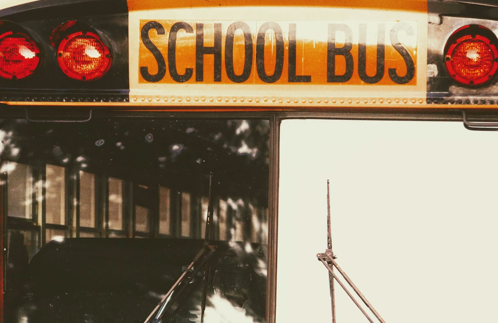

Driver readiness
Confirm the appropriate licence, screening, safeguarding training and emergency preparation for the operating area.
Credentials · Training · Route assignmentUnderstand the people, vehicle checks and daily routines behind a school journey. Ask for the records supporting each safety standard.

Confirm the appropriate licence, screening, safeguarding training and emergency preparation for the operating area.
Credentials · Training · Route assignmentReview pre-trip inspection, maintenance status, exits, mirrors, lights and emergency equipment before service.
Inspection · Maintenance · Emergency equipmentAgree safe waiting, boarding, seating and authorized collection routines with the school and family.
Safe stop · Assigned seat · Approved collectorLive tracking, camera access and alerts depend on the operator’s connected systems.
Use the assigned stop and stay clear of the vehicle approach.
Follow seating and restraint instructions and keep aisles clear.
Exit at the assigned stop and follow the collection arrangement.
For an immediate emergency, contact local emergency services first. Use the operator’s verified dispatch channel for active-trip concerns.
Share your school, area and the journey you have in mind.